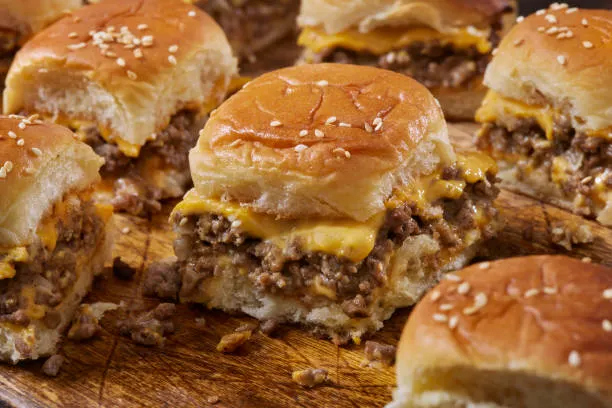

Click here to go back to the main recipe page.
Burger Sliders

Description
These tasty burger sliders are easy to make with savory ground beef and shredded Cheddar cheese, baked in mini rolls until warm and gooey.
These sandwiches remind me of those delicious mini burgers at my favorite fast-food restaurant! They are a perfect appetizer to bring to a party!
They are essentially miniature versions of regular burgers.
Various things can be added as toppings on this dish and is up to the cooks discretion to choose.
Ingredients
- 2 Pounds ground beef
- 1.25 Ounce onion soup mix
- 2 Cups shredded cheddar cheese
- 1/2 Cup mayonnaise
- 24 Dinner rolls, split
- 1/2 Cup sliced pickles (Optional)
All of these ingredients are necessary to an extent, many can be replaced with various other options. Many are also intentionally
left broad for the cooks discretion. It is recommended that beginners follow the recipe more tightly however.
Many measurements are also up for the cooks discretion the previous is just a rough estimate for this recipe.
Recipe Steps
Disclaimer: Ensure you possess the proper cooking pots and utensils before proceeding with a recipe. This greatly affects the recipe result.
- Preheat the oven to 350 degrees F (175 degrees C). Cover a baking sheet with aluminum foil and grease with cooking spray. Grease a sheet of aluminum foil; set aside.
- Mix ground beef and onion soup mix together in a large skillet; cook and stir over medium-high heat until beef is crumbly and evenly browned, 5 to 7 minutes. Drain and discard any excess grease.
- Remove the skillet from heat; stir in Cheddar cheese and mayonnaise.
- Place roll bottoms on the prepared baking sheet. Spread beef mixture onto each bottom; cover with bread roll tops. Cover sliders with the prepared sheet of aluminum foil.
- Bake in the preheated oven until burger sliders are heated through and cheese is melted, about 30 minutes.
- Serve sliders with sliced pickles (optional) and enjoy!
Many other toppings can be added to enjoy to the fullest!